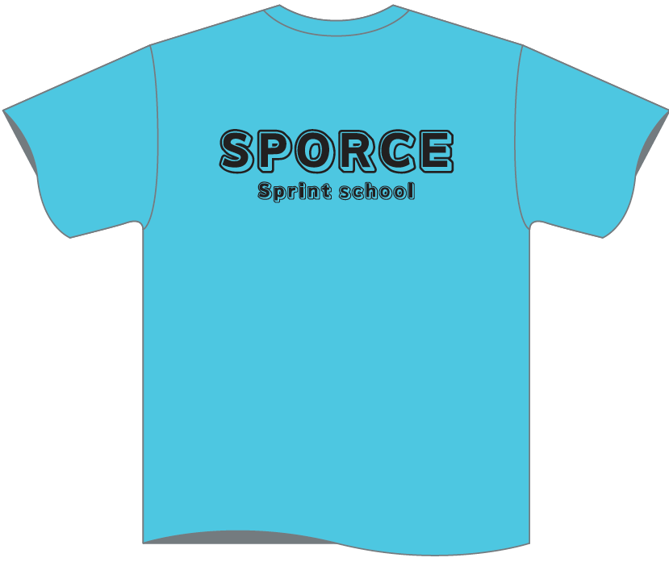
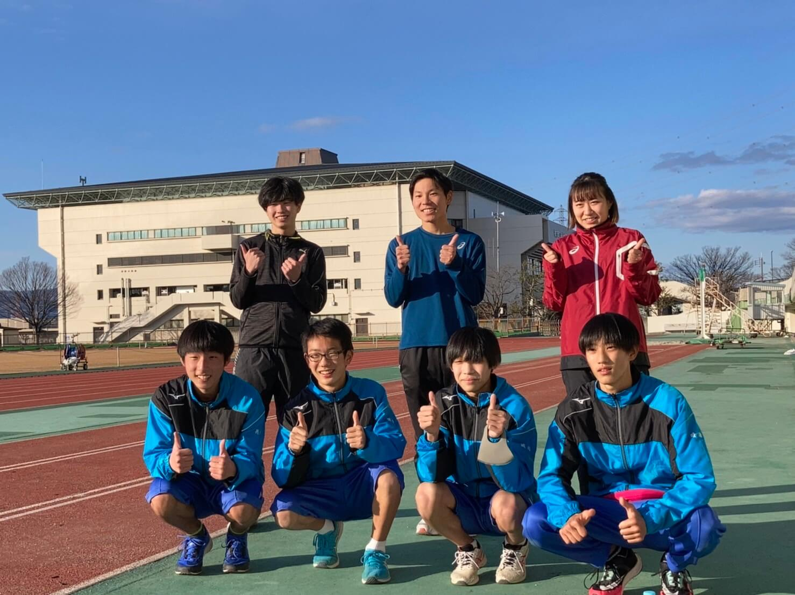
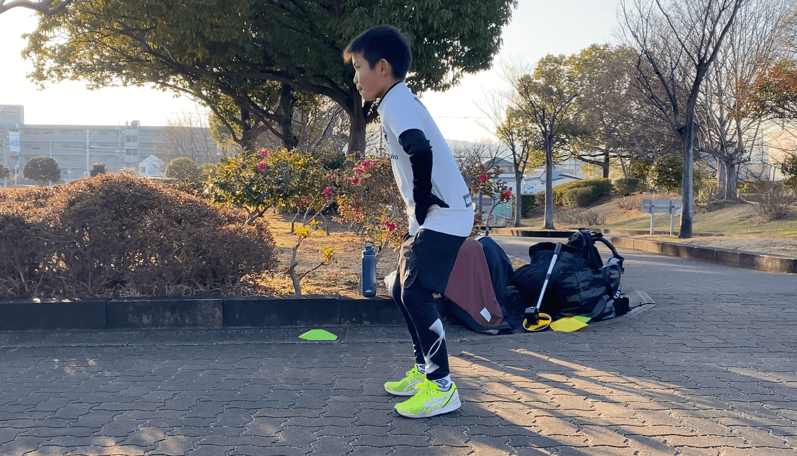
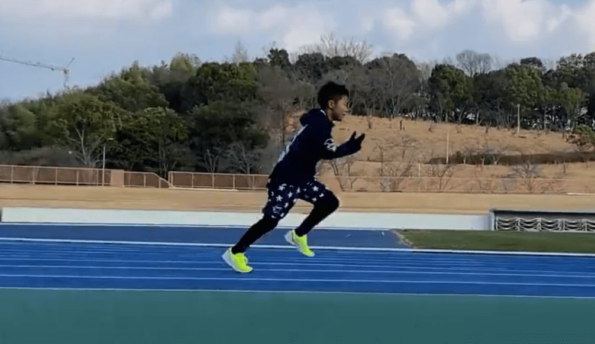
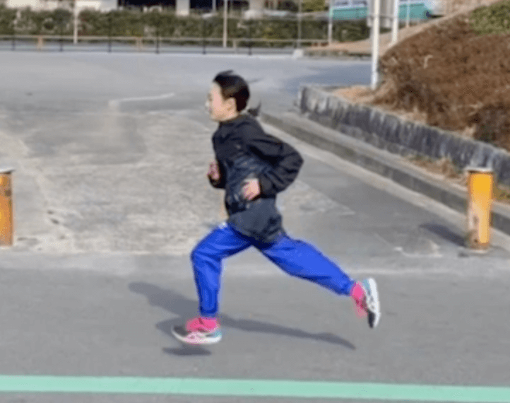
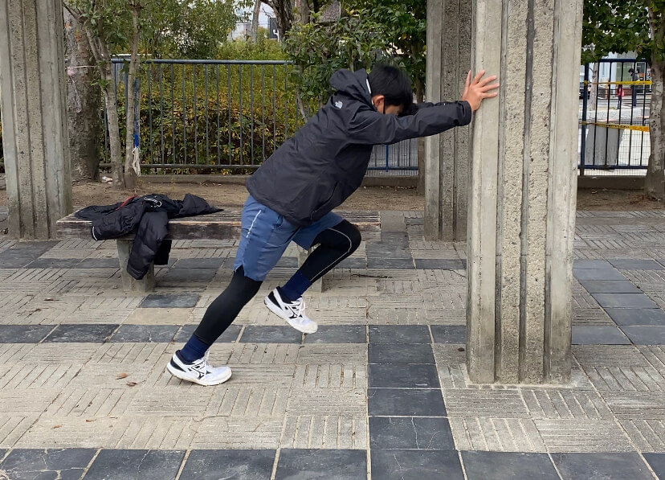
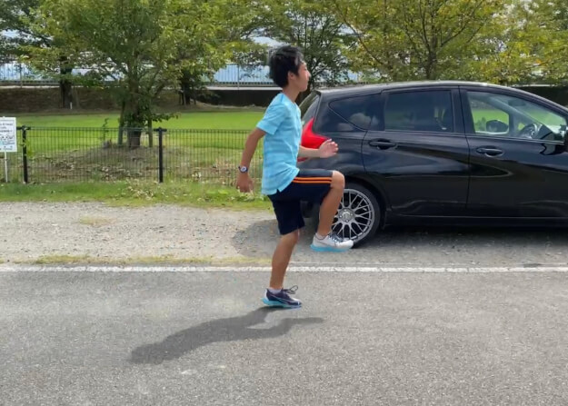

本日は、枚方にある陸上競技場で、パーソナルを受けていただいているR君と、その学校のリレーメンバーの子どもたちと練習を行いました。また、学生アスリートの方にも参加して頂き、とても良い練習を行うことができました。2022年は、このような機会をどんどん取り入れていきたいと思います！ありがとうございました。今後もよろしくお願いいたします🏃♂️

本日は、小学５年生のサッカー少年のスプリント向上レッスンを実施しました。最初の頃は、なかなか上手くできなかった力を発揮するような動作でも、継続して行うことで、徐々に力が入るようになってきました🔥これからは基礎体力を向上させていきましょう！

これまで定期的に指導させていただいている、サッカークラブに所属する小学校5年生が無事セレクションの１次を通過いたしました👏400人以上の人の中から、輝くことができたことは、本当に素晴らしいことです！ぜひ、この調子で、最終セレクションも突破できるように頑張って欲しいです🔥

トライアスロンの長距離パフォーマンスを向上させるために、レッスンを受けてくださいました👏レッスンごとに750mの計測を行っていましたが、毎回のようにベスト記録を更新していました。今後も頑張ってもらいたいです🔥一回のレッスンで劇的にパフォーマンスを上げることは、なかなか難しいですが、継続的に受けてくださることで成果は必ず出せますね！

サッカークラブに所属している小学6年生のレッスンを行いました⚽️背が高い選手ですので、どうしてもピッチ（足の回転）が遅くなってしまってしまいます。今回のレッスンでは、足の回転を速くすることを目的として実施しました。最後には、足がかなり速く回らせるようになりました！今後もよろしくお願いいたします。
SPORCEのコーチである米田コーチが、愛知で行われた今話題の陸上大会「SIGNAL」で優勝いたしました👏陸上系Youtuberであるハラケンチャンネルでも取り上げられましたので、ぜひ、ご覧ください👀2022年の活躍にも期待ですね！

SPORCEにおいて、パーソナル指導を開始致しました。広陵町にお住まいの中学生から長期的なパーソナル契約をさせていただきました。これから少しずつ頑張っていきましょう！
本クラブ所属の米田拓海コーチが、2021年度三重とこわか国体の奈良県代表に選出されました。しかし、コロナウイルスの影響で本大会は開催されないことが決定しました。米田コーチには、2022年度の国体出場に向けて頑張って欲しいと思います。
申し込み・お問い合わせ